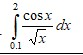
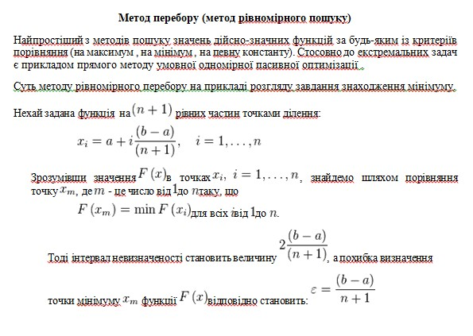
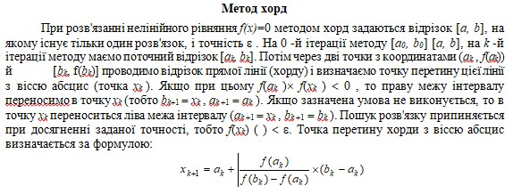

Лабораторна робота №3
Тема: Форми lambda та let, вираз присвоєння set! для розв’язання нелінійних рівнянь та чисельного інтегрування функцій
Завдання:
11.1.Знайти корені нелінійного рівняння виду:

Пошук наближеного значення хоча б одного кореня рівняння f(x) = 0 на відрізку [a; b] здійснювати методами хорд та перебором. Значення a, b інтервалу вибрати самостійно. Порівняти результати розв’язків двома методами
11.2 Написати процедури для обчислення інтеграла за формулами трапецій і Сімпсона. Порівняти результати обчислення.
Опис алгоритму для завдання 11.1:  
Опис алгоритму для завдання 11.2:
Структура програми (HIPPO діаграма):
Обгрунтування вибору середовища та мови
В якості середовища було обрано DrRacket версії 8.2 та мова Racket
Вибір середовища та мови був зумовлений наступним:
Код програми:
; #Task 11.1
; Enumerative Method
(define (Enumerative x step)
(if (> (*(- (cos x) (* x x)) (+ x step)) 0)
(Enumerative (+ x step) step)
(list (+ x step))))
; Secant Method
(define (SecantMethod func start end step)
(let ((xk (- start (/ (* (func start) (- end start)) (- (func end) (func start))))))
(cond
((> step (abs(- (func xk) (func start))))
xk)
((> 0(* (func xk) (func start)))
(SecantMethod func start xk step))
(else
(SecantMethod func xk end step)))))
(define (sum term start step stop)
(if (> start stop)
0
(+ (term start)
(sum term (step start) step stop))))
; Trapezoid Method
(define (Trapezoid f a b n)
(define h (/ (- b a) n))
(define (next x) (+ x h))
(* 0.5 h (+ (f a) (* 2 (sum f (+ a h) next (- b h))) (f b)))) ;trapezoid formula
; Simpson`s Method
(define (Simpson f start stop step)
(define h (/ (- stop start) step))
(define (next x) (+ x (* 2 h)))
(* (/ h 3)
(+ (f start)
(* 4 (sum f (+ start h) next (- stop h)))
(* 2 (sum f (+ start (* 2 h)) next (- stop (* 2 h))))
(f stop)))) ; Simpson`s formula
(display "\n#Task 11.1 Victoria Rimchuk, IPZ-43")
(newline)
(display "Enumerative Method: \t\t\n")
(Enumerative 0 0.0001)
(display "Secant Method \t\t\n")
(SecantMethod (lambda (x) (- (* x x) (sin x))) -1 1 0.0001)
(newline)
(display "Simpson`s method: \t")
(Simpson (lambda (x) (/ (cos x) (sqrt x) )) 0.1 2 10000)
(display "Trapezoid method: \t")
(Trapezoid (lambda (x) (/ (cos x) (sqrt x) )) 0.1 2 10000)
Скріншоти результатів:
Аналіз достовірності результатів:
11.1 Із представленого вище скріншота видно, що отримані результати починають відрізнятися з другої цифри після коми (хоча, для обох методів точність задана однакова 10^(-3)). Достовірність отриманих результатів було перевірено за допомогою онлайн калькулятора для розв'язку нелінійних рівнянь:
Проаналізувавши отримані результати можна зробити висновок, що результат, отриманий за допомогою методу перебору є більш точним, ніж результат, отриманий методом хорд, оскільки, співпадає з результатом онлайн калькулятора до 4 цифри після коми, згідно заданої точності 10^(-3), в той час, як результат, отриманий методом хорд співпадає тільки до 1 цифри після коми.
11.2 Із представленого вище скріншота з результатами роботи програми видно, що отримані результати практично однакові. Достовірність отриманих результатів було перевірено за допомогою онлайн калькулятора для обчислення інтегралу:
.jpg)
Проаналізувавши отримані результати можна зробити висновок, що, отримані обома методами результати починають відрізнятися тільки з четвертої цифри після коми (це залежить від заданої точності). Тобто, звідси можна зробити висновок, що реалізовані в рамках роботи методи для обчислення інтегралу мають досить високу точність.
Висновки:
В ході виконання даної лабораторної роботи було розв’язківязано нелінійні рівняння та здійснено чисельне інтегрування функцій наближеними методами, використовуючи мови функціонального програмування та lambda, let та set! форми на прикладі виконання наступних завдань: